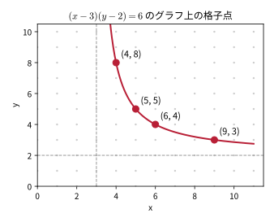

例題 5数と式 因数分解の利用（整数解）
次の式をみたす自然数 \(x,\ y\) の組 \((x,\ y)\) をすべて求めよ。\[xy-2x-3y=0\]
解き方（まず考え方）
左辺を「（式）×（式）＝整数」の形に直す。\(xy-2x-3y\) に \(6\) を足すと \((x-3)(y-2)\) になる。かけて整数になる2数の組を、約数の表で調べる。
コツかけ算の答えが6なら、片方が決まると、もう片方も自動で決まる。約数の組を全部ならべて、条件に合うものだけ残す。
解答
STEP 1 左辺を因数分解の形に直す
\((x-3)(y-2)=xy-2x-3y+6\) なので、両辺に \(6\) を足して、
\[xy-2x-3y+6=6\ \Rightarrow\ (x-3)(y-2)=6\]STEP 2 \(x-3,\ y-2\) のとりうる範囲を調べる
\(x\geqq1\) より \(x-3\geqq-2\)、\(y\geqq1\) より \(y-2\geqq-1\)。
STEP 3 6の約数の組を全部ならべる
整数の組 \((x-3,\ y-2)\) は次の8通り。範囲に合うか調べる。
| \(x-3\) | \(y-2\) | \(x\) | \(y\) | 判定 |
|---|---|---|---|---|
| 1 | 6 | 4 | 8 | ○ |
| 2 | 3 | 5 | 5 | ○ |
| 3 | 2 | 6 | 4 | ○ |
| 6 | 1 | 9 | 3 | ○ |
| −1 | −6 | 2 | −4 | ×（\(y\) が自然数でない） |
| −2 | −3 | 1 | −1 | ×（\(y\) が自然数でない） |
| −3 | −2 | 0 | 0 | ×（\(x\) が自然数でない） |
| −6 | −1 | −3 | 1 | ×（\(x\) が自然数でない） |
STEP 4 確かめる
\((4,8)\)：
\[4\cdot8-2\cdot4-3\cdot8=32-8-24=0\]他の組も同じように成り立つ。
【答案（テストに書く形）】
\[(x,\ y)=(4,\ 8),\ (5,\ 5),\ (6,\ 4),\ (9,\ 3)\]答
なぜそうなる？（理由とイメージ）
❓ なぜ「6を足す」と因数分解になるの？
\((x-3)(y-2)\) を展開すると \(xy-2x-3y+6\)。\(x\) と \(y\) の係数の積 \(3\times2=6\) が余分に出る。そこで両辺に6を足して、左辺をかっこの積にそろえる。
| \(x\) | \(-3\) | |
|---|---|---|
| \(y\) | \(xy\) | \(-3y\) |
| \(-2\) | \(-2x\) | \(+6\) |
❓ なぜ「約数の組」だけ調べればよいの？
\(x,\ y\) は整数だから、\(x-3\) と \(y-2\) も整数。整数×整数＝6 となる組は、6の約数のペアだけ。無限にある式が、有限の候補にしぼれる。
❓ なぜ範囲を調べるの？ （グラフで見る）
問題の条件は自然数。表の候補のうち、条件に合わないものを消すために範囲を調べる。曲線 \((x-3)(y-2)=6\) の上にある格子点（\(x,\ y\) がともに整数の点）のうち、自然数のものが答え。

赤い点が自然数の解（4点）
練習問題 5
- \(xy-3x-4y=0\ \text{（自然数解）}\)
- \(xy+2x-5y=0\ \text{（自然数解）}\)
- \(xy-5x-y=0\ \text{（自然数解）}\)